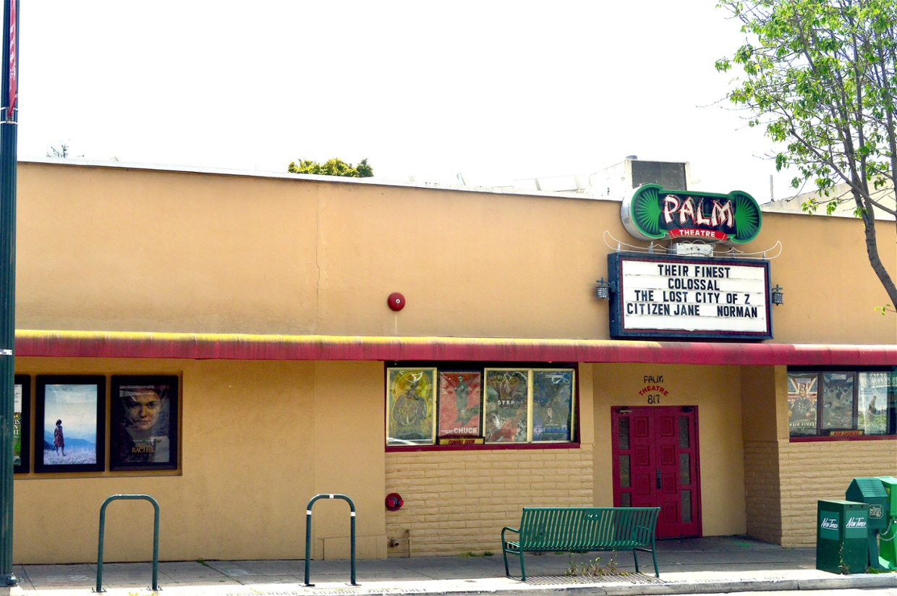

About the Palm Theatre

The beginnings of the Palm Theatre go back to 1973 when then-students Jim Dee and Paul Karlen hosted on-again, off-again screenings of a diverse selection of short and full-length films under the banner of The San Luis Obispo Zoopraxographical Film Society, or Cinema Zoo. The screenings were presented at various locations around San Luis Obispo. The lengthy term refers to the Zoopraxographical Hall in Chicago, supposedly the world’s first moving image theater in 1893. From cartoons to international shorts, and films by Roger Corman to Ingmar Bergman, the Cinema Zoo’s presentations were well-attended, usually with an admission price of 75 cents. Each program was accompanied by a unique silk-screened poster created by Karlen. In January of 2013, the San Luis Obispo Museum of Art created an exhibition of all of the Cinema Zoo posters from 1973-1976.
The next short-lived incarnation of Cinema Zoo came in 1976 as part of the Savannah Dinner Theater at 967 Osos Street in San Luis Obispo. Film screenings alternated with live performances. The enterprise only lasted a year, retiring the Cinema Zoo name.

In 1979, Jim and Patty Dee returned to the space that housed the Savannah Dinner Theater at 967 Osos Street and created the Rainbow Theatre: a single screen theatre in San Luis Obispo’s historic J. P. Andrews building. The Rainbow provided an ambitious schedule of first run foreign and domestic films, classics, midnight favorites like The Rocky Horror Picture Show and Eraserhead, and creative double features. The Rainbow was instrumental in greatly expanding the film offerings for the entire central coast area of California with patrons driving from as far away as Los Angeles and San Francisco.
With the success of the Rainbow Theater, the Dees wanted to expand the enterprise with more screens in San Luis Obispo. In March of 1988, the Dees acquired the building at 817 Palm street, once housing the California Employment Development Department, in the heart of SLO’s Historic Chinatown. A major remodel of the building created a two-screen movie theatre along with three private office spaces opening in August of 1988, and along with the Rainbow Theatre, provided a large selection of great cinema for San Luis Obispo. Unfortunately, the costs of remodeling the Palm building, accompanied by a slowdown in business in the late 80s and early 90s, forced the closing of the Rainbow Theatre in July of 1989. In 1993 the three office spaces were removed to create a third screen at the Palm.
The First Theater in America to be Solar Powered

In the summer of 2004, the Dees installed 98 solar panels on the roof of the Palm, becoming the first movie theatre in the United States to become solar powered. Additionally, a white reflective roofing material was added for additional environmental benefits. In 2012-2013, the Palm fully converted to digital projection and 5.1 Dolby sound in all three screens.
In August of 2013, the Palm Theatre celebrates 25 years of providing alternative cinema and community events for San Luis Obispo County.